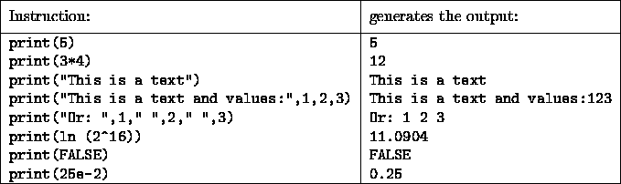

This section describes the second group of function calls which are related to network or network files. The second group of SNNS functions contains the following function calls:

The function calls loadNet and saveNet both have the same format:
loadNet (file_name)
saveNet (file_name)
where file_name is a valid Unix file name enclosed by " ". The function loadNet loads a net in the simulator kernel and saveNet saves a net which is currently located in the simulator kernel. The function call loadNet sets the system variable CYCLES to zero. This variable contains the number of training cycles used by the simulator to train a net. Examples for such calls could be:
loadNet ("encoder.net")
...
saveNet ("encoder.net")
The following result can be seen:
Net encoder.net loaded
Network file encoder.net written
The function call saveResult saves a SNNS result file and has the following format:
saveResult (file_name, start, end, inclIn, inclOut, file_mode)
The first parameter (file_name) is required. The file name has to be a valid Unix file name enclosed by " ". All other parameters are optional. Please note that if one specific parameter is to be entered all other parameters before the entered parameter have to be provided also. The parameter start selects the first pattern which will be handled and end selects the last one. If the user wants to handle all patterns the system variable PAT can be entered here. This system variable contains the number of all patterns. The parameters inclIn and inclOut decide if the input patterns and the output patterns should be saved in the result file or not. Those parameters contain boolean values. If inclIn is TRUE all input patterns will be saved in the result file. If inclIn is FALSE the patterns will not be saved. The parameter inclOut is identical except for the fact that it relates to output patterns. The last parameter file_mode of the type string, decides if a file should be created or if data is just appended to an existing file. The strings "create" and "append" are accepted for file mode. A saveResult call could look like this:
saveResult ("encoder.res")
saveResult ("encoder.res", 1, PAT, FALSE, TRUE, "create")
both will produce this:
Result file encoder.res written
In the second case the result file encoder.res was written and contains all output patterns.
The function calls initNet, trainNet, testNet are related to each other. All functions are called without any parameters:
initNet()
trainNet()
testNet()
initNet() initializes the neural network. After the net has been reset with the function call setInitFunc, the system variable CYCLE is set to zero. The function call initNet is necessary if an untrained net is to be trained for the first time or if the user wants to set a trained net to its untrained state.
initNet()
produces:
Net initialized
The function call trainNet is training the net exactly one cycle long. After this, the content of the system variables SSE, MSE, SSEPU and Cycles is updated.
The function call testNet is used to display the user the error of the trained net, without actually training it. This call changes the system variables SSE , MSE, SSEPU but leaves the net and all its weights unchanged.
Please note that the function call trainNet is usually used in combination with a repetition control structure like for, repeat, or while.